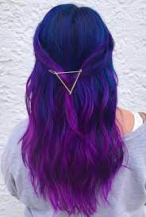
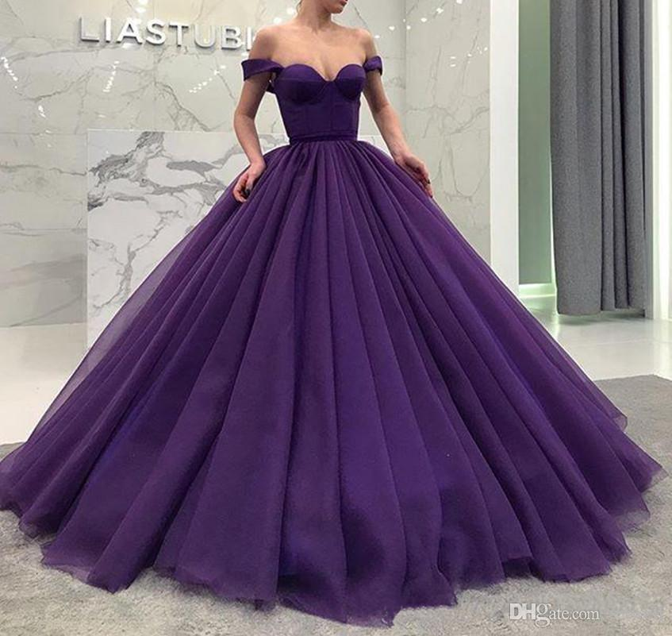
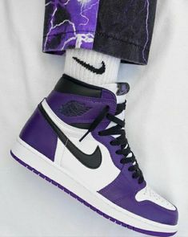

A cor roxa (ou púrpura) está ligada ao
mundo místico e significa espiritualidade,
magia e mistério. O roxo transmite a sensação
de tristeza e introspecção. O ambiente roxo é
misterioso e místico, sendo a cor apropriada
para um local de meditação. Pode ser uma cor
depressiva e melancólica, se usada em excesso.


